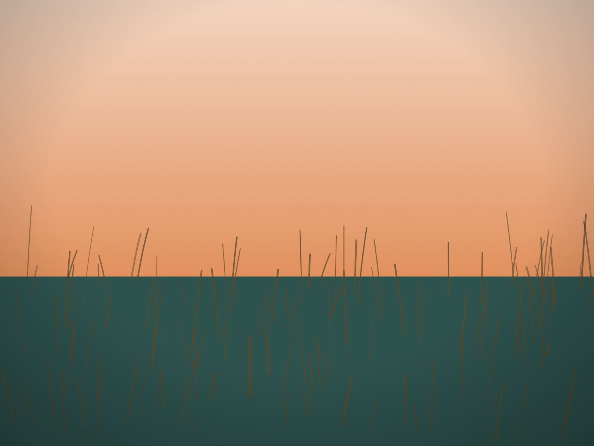

Most visitors see Delaware's coast from the ocean side. Behind the beaches is a second coast: three shallow bays known together as Delaware's Inland Bays.
Three bays
The Inland Bays are Rehoboth Bay, Indian River Bay and Little Assawoman Bay. Little Assawoman, the smallest, is also the southernmost. Together with the land that drains into them, they make up the Inland Bays watershed.
They are an estuary, a place where fresh water from the land meets salt water from the sea. Indian River Inlet is where that exchange with the Atlantic happens.
A national designation
In 1988 Congress designated the Inland Bays an estuary of national significance. That designation is what makes their stewardship part of the National Estuary Program, a network of 28 estuaries around the country.
The Center for the Inland Bays
The Delaware Center for the Inland Bays was established by the Delaware General Assembly in 1994 as an independent nonprofit. Its creation came after some 20 years of public participation and investigation into the decline of water quality in the bays.
Its mission is to preserve, protect and restore the Inland Bays and their watershed. It does that through a Comprehensive Conservation and Management Plan that covers scientific study of the bays' health, water quality improvement, restoration of fish and wildlife habitat, and public education about what affects the watershed.
Seeing them
The Center manages the James Farm Ecological Preserve in Ocean View, on Indian River Bay, which was a recent Delaware Beach Finds Hidden Gem. The preserve is open sunrise to sundown year-round, and the Center runs public programs there and around the bays.
The simplest way to understand the bays is to see them after a day at the ocean. They are calmer, shallower and quieter, and they are as much a part of the coast as the surf.
Sources: Delaware Center for the Inland Bays, "About" (inlandbays.org), for the three bays, the 1988 congressional designation, the 28 National Estuary Programs, the 1994 founding by the General Assembly after 20 years of public participation, the mission and the Comprehensive Conservation and Management Plan; the Center's "Visit the Preserve" page for James Farm's sunrise-to-sundown hours. Delaware Beach Finds did not visit for this story; program dates are the Center's.